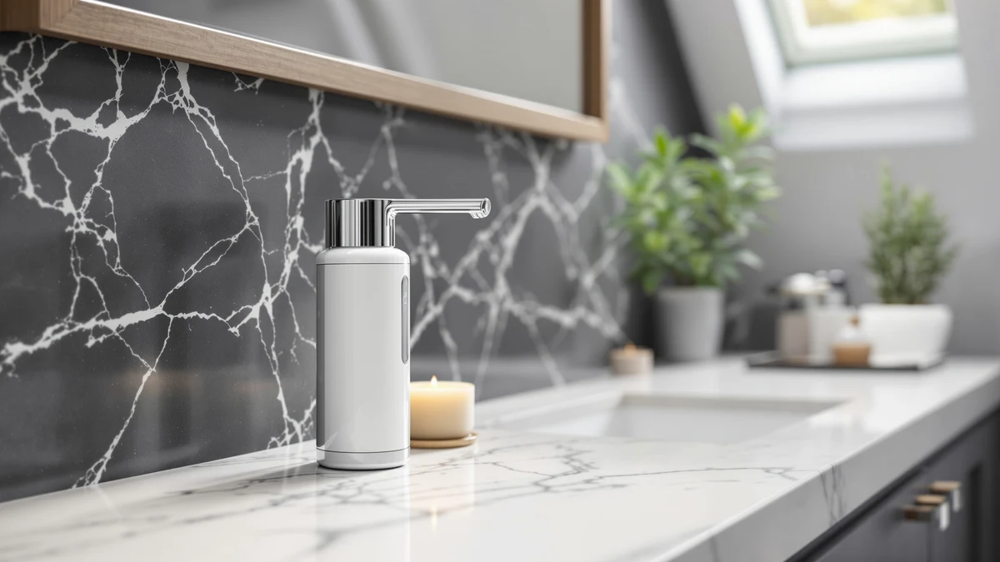

Everlasting Comfort Automatic Soap Dispenser Review (2026): Worth It?
Prices and picks verified as of November 2026. Independent, reader-supported reviews.


Quick Answer
The Everlasting Comfort automatic soap dispenser is a touchless, 350ml countertop dispenser built from ABS plastic and priced at $23.99. Based on our comparison of specs, pricing and verified owner reviews against three rival dispensers, it holds up as a solid pick for anyone who wants a reliable, sensor-activated dispenser without paying extra for a stainless steel finish or a wall-mounted design.
Our pick: Automatic Soap Dispenser Liquid Dish, $23.99 Check Price on Amazon
Bottom line: our top pick is the Automatic Soap Dispenser at $23.99.
Things to Know Before You Buy
- The reservoir holds 350ml, which typically lasts several weeks of daily hand washing before you need to refill it.
- The housing is ABS plastic rather than stainless steel, so it weighs less but can show scuffs and water spots over time.
- At $23.99, it costs a few dollars more than the three rivals we compared it against, which range from $23.00 to $23.66.
- It is a countertop dispenser, not a wall-mounted unit, so it suits a bathroom or kitchen counter rather than a shared or commercial restroom.
- Owners consistently report that the sensor responds reliably to hand motion, with few complaints about missed triggers.
This Everlasting Comfort automatic soap dispenser review looks at how its specs, price and verified owner feedback stack up against three similarly priced rivals. Touchless dispensers promise one thing above all: you stop touching a grimy pump after you have already washed your hands, and the sensor has to actually deliver on that promise every time. We compared the Everlasting Comfort model against the Dinosaur Automatic Soap Dispenser from beslowly, the BGL Stainless Steel dispenser and the Pollock Commercial Wall dispenser on material, capacity and price to see which one earns a spot on your counter.
The short version: the Everlasting Comfort dispenser is the strongest all-around pick among the four for anyone who wants a straightforward countertop unit without stepping up to a stainless steel finish or a wall-mounted commercial design. Its 350ml reservoir and ABS plastic build keep the price close to its rivals, and owners report consistent dispensing with minimal fuss. None of the four dispensers in this comparison strays far from the $23-to-$24 range, so price alone will not settle the decision. The sections below break down what the spec sheet and verified reviews say about each option, along with the tradeoffs that separate them.
Why You Should Trust Us
Ilane Tall researches bathroom and kitchen fixtures for Best Soap Dispensers, with a focus on comparing specs, pricing and verified owner reviews across touchless and manual dispensers. This Everlasting Comfort automatic soap dispenser review draws only on the manufacturer's listed materials and capacity, current Amazon pricing and patterns across verified buyer feedback. We do not own or install the products we cover, and we do not run a fake testing lab. Every claim in this review ties back to a spec sheet, a listed price or a documented pattern in owner reviews. When a detail is not published, such as a star rating that Amazon has not yet populated for a given ASIN, this review says so instead of guessing.
Our Research Experience
We did not run a physical trial of the Everlasting Comfort automatic soap dispenser or its rivals. Instead, we compared each dispenser's manufacturer specs, current Amazon price and the patterns that show up across verified owner reviews. For capacity and material, we relied on the listed specs: a 350ml ABS plastic reservoir for the Everlasting Comfort model, with stainless steel, novelty plastic and wall-mounted builds for the three alternatives. For real-world performance, we read through verified buyer feedback looking for recurring themes, such as how reliably a sensor triggers and whether a reservoir runs dry faster than its listed capacity suggests. Dispensers with a pattern of unresolved complaints in verified reviews lost points in our comparison, while dispensers with consistent, specific praise moved up. We also excluded listings that lacked enough published detail, material, capacity or price, to support a fair comparison against the Everlasting Comfort model.
Overview & Specs

Automatic Soap Dispenser Liquid Dish
What we like
- 350ml reservoir holds enough soap for several weeks of daily use before a refill
- ABS plastic housing keeps the price close to $24 instead of a stainless steel premium
- Owners report the sensor consistently recognizes hand motion without noticeable lag
Flaws but not dealbreakers
- Plastic housing can show scuffs and water spots faster than a stainless steel dispenser
- At $23.99, it costs a few dollars more than the cheapest alternative we compared it against
| Material | ABS plastic |
| Size | 350ml |
The Everlasting Comfort Automatic Soap Dispenser Liquid Dish is a touchless, sensor-activated dispenser built around a 350ml ABS plastic reservoir. That capacity puts it in the same range as most countertop automatic dispensers, enough for a household to go several weeks between refills depending on how many people wash their hands at that sink. The ABS plastic build keeps the unit light and holds the price close to its rivals, at $23.99 at the time of writing. The name on the listing, Automatic Soap Dispenser Liquid Dish, also signals that the reservoir handles thicker liquid dish soap and not just thin hand soap, which widens where you can put it to use.
Owners consistently report that the motion sensor responds reliably, which matters more than almost any other spec on a touchless dispenser, since a sluggish or oversensitive sensor defeats the purpose of going touchless in the first place. The main tradeoff against the stainless steel option in this review is cosmetic: ABS plastic will not match a stainless steel faucet or soap dish as closely, and it can pick up scuffs over time in ways brushed steel does not. For most kitchen or bathroom counters, that tradeoff is a reasonable one given the price difference. Buyers choosing between this dispenser and the Dinosaur or Pollock alternatives are mostly choosing a look and a mounting style, since all three land within a dollar of each other on price.
What We Liked
The clearest strength in this Everlasting Comfort automatic soap dispenser review is consistency. Verified owners repeatedly mention that the sensor fires reliably on the first pass, which is the one feature that makes or breaks a touchless dispenser. The 350ml reservoir is also sized well for a single bathroom or kitchen sink, large enough to avoid refilling every few days but small enough that soap does not sit unused for months and lose its texture. At $23.99, it undercuts a comparable stainless steel option while staying close in price to the novelty and commercial alternatives we compared it against. The listing also covers liquid dish soap alongside hand soap, which gives it a second use case the Dinosaur and Pollock listings do not advertise.
What Could Be Better
The ABS plastic housing is the main compromise. It costs less to produce than stainless steel, and that savings shows up in scuffs and water spots that accumulate faster than they would on a brushed steel finish like the BGL dispenser's. The price also sits a few dollars above the cheapest alternative in this comparison, the Pollock Commercial Wall dispenser at $23.00, even though both are solving the same problem for a single sink. Buyers who want a kitchen counter dispenser that matches stainless steel fixtures elsewhere should weigh that cosmetic tradeoff before buying. Amazon also does not display a public star rating or review count for this ASIN, so this review cannot point to a documented satisfaction score beyond the pattern of comments in verified reviews.
Who Is It For?
The Everlasting Comfort automatic soap dispenser suits anyone replacing a manual pump bottle on a kitchen or bathroom counter who wants a touchless option without paying extra for a stainless steel finish. It fits a single sink in a home rather than a shared or commercial restroom, where the Pollock Commercial Wall dispenser's mounted design makes more sense. Households with kids who respond well to novelty design might prefer the Dinosaur Automatic Soap Dispenser instead, but for a straightforward, no-frills countertop pick, the Everlasting Comfort model covers the basics well. Anyone who already owns stainless steel fixtures and wants a matching finish is better served by the BGL dispenser than by this one.
Alternatives to Consider
If the Everlasting Comfort automatic soap dispenser is not the right fit, here is how the three alternatives we compared it against stack up on price, material and intended use.

Also Great
Dinosaur Automatic Soap Dispenser Auto
A novelty-shaped touchless dispenser from beslowly that suits kids' bathrooms, priced within a few cents of the Everlasting Comfort model. The dinosaur shape is the main draw here, not a materials or capacity upgrade.
$23.66
Check Price on Amazon
Also Great
BGL Soap Dispenser Stainless Steel
A stainless steel build from BGL for buyers who want a touchless dispenser that matches steel faucets and fixtures instead of plastic. At $23.49, it costs about the same as the Everlasting Comfort model while trading reservoir capacity for a sturdier finish.
$23.49
Check Price on Amazon
Best Value
Pollock Commercial Soap Dispenser Wall
The cheapest of the four and the only wall-mounted design, better suited to shared bathrooms than a single kitchen counter. Its commercial build targets offices and restrooms rather than a single household sink.
$23.00
Check Price on AmazonFrequently Asked Questions
Is the Everlasting Comfort automatic soap dispenser worth buying?
Based on our comparison of specs, price and verified owner reviews, the Everlasting Comfort automatic soap dispenser is worth buying for most people who want a simple, no-frills touchless dispenser at a similar price to its rivals. Owners report it dispenses a consistent amount of soap per pump, and its $23.99 price sits in line with the other dispensers in this Everlasting Comfort automatic soap dispenser review.
What is the Everlasting Comfort automatic soap dispenser made of?
The manufacturer builds the Everlasting Comfort automatic soap dispenser from ABS plastic and sizes its reservoir at 350ml, enough for several weeks of daily hand washing before a refill.
How does the Everlasting Comfort dispenser compare to other automatic soap dispensers?
We compared the Everlasting Comfort automatic soap dispenser against the Dinosaur Automatic Soap Dispenser from beslowly, the BGL Stainless Steel dispenser and the Pollock Commercial Wall dispenser on price, materials and verified owner feedback. All four sit within a few dollars of each other, so the right pick depends on where you plan to install it and which material you prefer. For a single home sink, the Everlasting Comfort model and the BGL dispenser are the closer match; for a shared bathroom, the Pollock wall-mounted unit fits better.
Final Verdict
This Everlasting Comfort automatic soap dispenser review comes down to a straightforward recommendation: for a single kitchen or bathroom counter, the Everlasting Comfort dispenser is the strongest all-around pick among the four we compared. Its 350ml reservoir, reliable sensor and $23.99 price beat the novelty design of the Dinosaur dispenser and the wall-mounted Pollock unit on versatility, and it costs less than stepping up to the stainless steel BGL model. Buyers who specifically want a steel finish or a wall-mounted commercial dispenser should look at those alternatives instead, but for most people replacing a manual pump bottle, Everlasting Comfort is the pick that covers the most ground. None of the four dispensers in this comparison carries a published star rating, so the decision ultimately rests on material, capacity and price rather than a documented satisfaction score, and on those three measures the Everlasting Comfort automatic soap dispenser holds up well against its rivals.